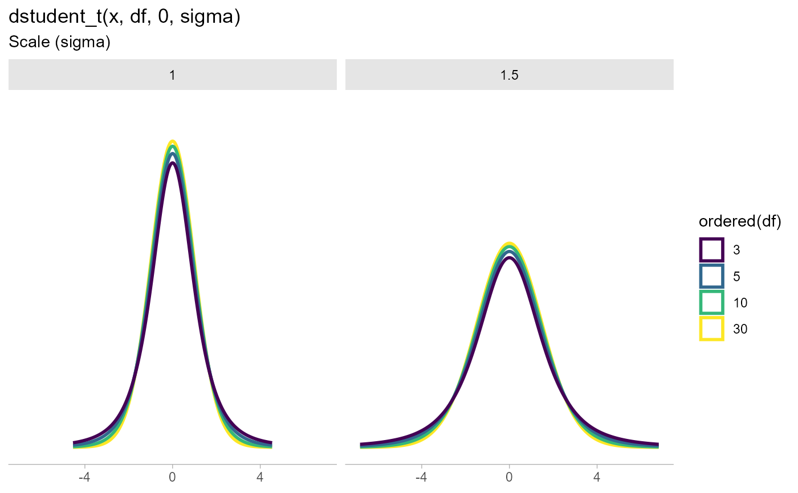

Density, distribution function, quantile function and random generation for the
scaled and shifted Student's t distribution, parameterized by degrees of freedom (df),
location (mu), and scale (sigma).
dstudent_t(x, df, mu = 0, sigma = 1, log = FALSE) pstudent_t(q, df, mu = 0, sigma = 1, lower.tail = TRUE, log.p = FALSE) qstudent_t(p, df, mu = 0, sigma = 1, lower.tail = TRUE, log.p = FALSE) rstudent_t(n, df, mu = 0, sigma = 1)
| x | vector of quantiles. |
|---|---|
| df | degrees of freedom (\(> 0\), maybe non-integer). |
| mu | Location parameter (median) |
| sigma | Scale parameter |
| log | logical; if TRUE, probabilities p are given as log(p). |
| q | vector of quantiles. |
| lower.tail | logical; if TRUE (default), probabilities are \(P[X \le x]\), otherwise, \(P[X > x]\). |
| log.p | logical; if TRUE, probabilities p are given as log(p). |
| p | vector of probabilities. |
| n | number of observations. If |
dstudent_t gives the density
pstudent_t gives the cumulative distribution function (CDF)
qstudent_t gives the quantile function (inverse CDF)
rstudent_t generates random draws.
The length of the result is determined by n for rstudent_t, and is the maximum of the lengths of
the numerical arguments for the other functions.
The numerical arguments other than n are recycled to the length of the result. Only the first elements
of the logical arguments are used.
parse_dist() and parsing distribution specs and the stat_dist_slabinterval()
family of stats for visualizing them.
library(dplyr) library(ggplot2) library(forcats) expand.grid( df = c(3,5,10,30), scale = c(1,1.5) ) %>% ggplot(aes(y = 0, dist = "student_t", arg1 = df, arg2 = 0, arg3 = scale, color = ordered(df))) + stat_dist_slab(p_limits = c(.01, .99), fill = NA) + scale_y_continuous(breaks = NULL) + facet_grid( ~ scale) + labs( title = "dstudent_t(x, df, 0, sigma)", subtitle = "Scale (sigma)", y = NULL, x = NULL ) + theme_ggdist() + theme(axis.title = element_text(hjust = 0))